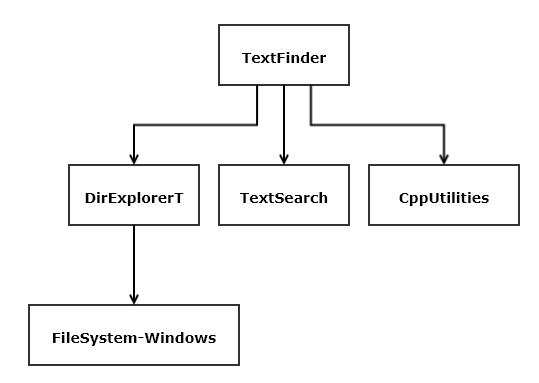

XAdd next and prev links for all connected pages, e.g., notes, blogs, repos

TextFinder Packages
Image CSS hack in RepoPageTemplate.html and other Repository pages: Cleanup CSS.
The image on the right uses the "hacked" styling. It's here to serve
as a testbed for that fixing.
SiteMap:
Add condensed repository table
Add personal page
Repository Pages:
Add missing pages for new repositories
Add design detail and UML diagrams to existing repo pages
Add option to write output to file in ProcessCmdLine
Update ProcessCmdLine in FileFinder
Major overhaul of UI for Duplicates - start with new ProcessCmdLine
Update Property to use template template parameter, as done in SingletonLogger
Add queued logger option which uses single threaded apartment
PrettyPrint: add write to file
CodeAnalyzer: simplify and port dependency analysis from CsDependencyAnalysis
MsgPassingComm: make messages compatible with HTTP
Webpage Components:
Standard webcomponents (championed by Google and sanctified by W3C) appear to be
an effective way to build components, e.g., reuseable parts, for web pages.
Angular, Vue, and React have also developed interesting component technologies.
I plan to use webcomponents for resize-able images and perhaps an alternative to
standard html <details> with slightly different behavior.